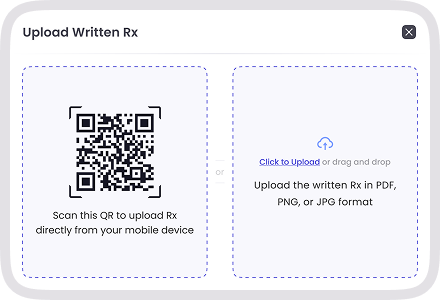

SnapRx is a healthcare-grade OCR engine purpose-built for the messy reality of handwritten Indian prescriptions.

A photographed Rx scan is the most common artefact in Indian healthcare — 60% of prescriptions are still written on paper. Off-the-shelf OCR misreads dosages, confuses brand names, and ignores Indian medical abbreviations. SnapRx is trained on 5 million+ Indian Rx and benchmarked at 96% drug-name accuracy.
One photo, clean structured record. Crooked angles, low light, faded ink — handled.
Maps brand to generic, generic to brand. 100,000+ Indian formulations cross-referenced.
BD, TDS, OD, SOS, HS, q4h, prn — recognised and expanded inline.
Output is ABDM-compliant Rx. ABHA-linked with patient consent.
Phone camera or upload. SnapRx auto-corrects skew and brightness.
Drug names, dosages, frequencies, durations, instructions.
One tap to accept the parsed Rx. Edit inline if needed.
ABDM-linked record. WhatsApp share to patient.
"We digitise old paper Rx for every new patient using SnapRx. The history we get instantly is invaluable for chronic care."
SnapRx is trained specifically on Indian doctor handwriting — known to be among the hardest to OCR. The model uses contextual cross-checking against a 100,000-drug formulary, so even where individual letters are ambiguous, the most likely drug + dosage combination surfaces with a confidence score.
SnapRx auto-corrects rotation, perspective, and lighting before OCR runs. Photos taken on a phone in a busy OPD environment work fine — you do not need a scanner or a tripod.
Yes. Capture each page sequentially in the same session and SnapRx merges them into a single Rx record with proper page references and an audit trail.
Every extracted drug is resolved against the formulary and tagged with both its brand and generic equivalents. Pharmacists and downstream systems can use whichever is appropriate for the context.
Yes. Photos are encrypted in transit, processed in India-resident infrastructure, and discarded after extraction. Only the structured Rx is retained, linked to the patient record under DPDPA compliance.